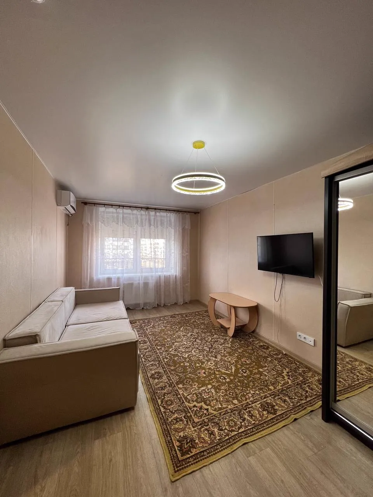

Покупаете квартиру в Мариуполе: пять проверок до задатка

Пять проверок, которые мы делаем до внесения задатка. Они закрывают основную часть рисков при покупке квартиры в Мариуполе — и на вторичном рынке, и в новостройке.
1. Выписка из ЕГРН
Заказываем свежую выписку на объект и проверяем собственника. Смотрим обременения, аресты, ипотеку, доли несовершеннолетних. Если продавец показывает «выписку месячной давности» — заказываем заново: сведения меняются.
2. Основания права
Как квартира досталась продавцу: договор купли-продажи, наследство, приватизация, дарение. Каждое основание несёт свой риск. Наследство — возможные претензии других наследников; приватизация — неучтённые участники; дарение — попытка скрыть сделку от третьих лиц.
3. Долги и зарегистрированные жильцы
Проверяем задолженность по ЖКХ и взносам на капремонт, а также кто зарегистрирован в квартире. Выписанные, но сохранившие право пользования люди — частая причина судов уже после сделки.
4. Техническое состояние дома и коммуникаций
Осматриваем не только квартиру, но и дом: год постройки, состояние кровли, подвала, стояков, отопления и электрики. Для восстановленных домов это особенно важно: качество работ по разным объектам отличается.
5. Документы БТИ
Сверяем фактическую планировку с техническим паспортом: перепланировки должны быть узаконены. Несоответствие — риск отказа в регистрации или штрафа для нового собственника.
Как мы оформляем сделку
- Задаток — только после проверки документов и с письменным соглашением.
- Деньги — через аккредитив или safe-сделку, а не «наличными из рук в руки».
- Регистрация права — в Росреестре, с вашим участием или по доверенности.
- Передача ключей — по акту приёма-передачи с показаниями счётчиков.
Если вы только присматриваетесь к объекту — пришлите адрес и цену: скажем, завышена ли стоимость относительно рынка и какие вопросы задать продавцу первыми.